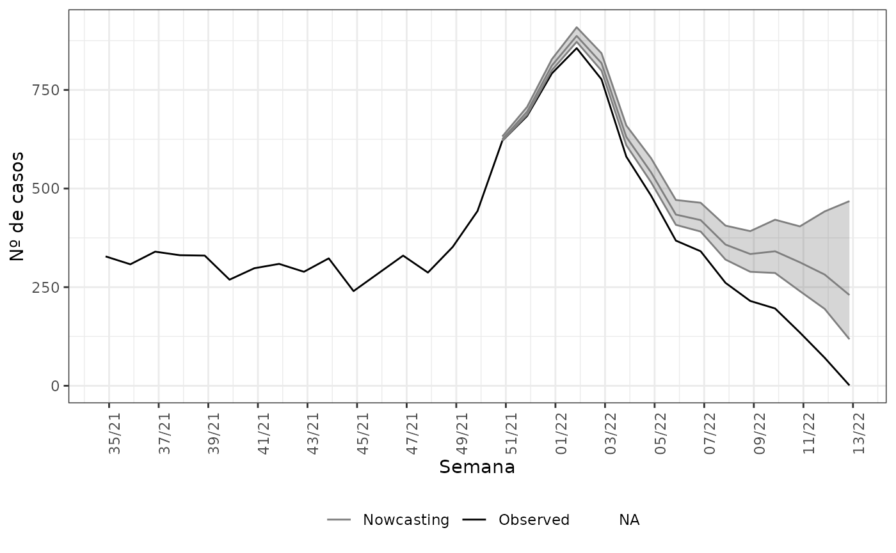
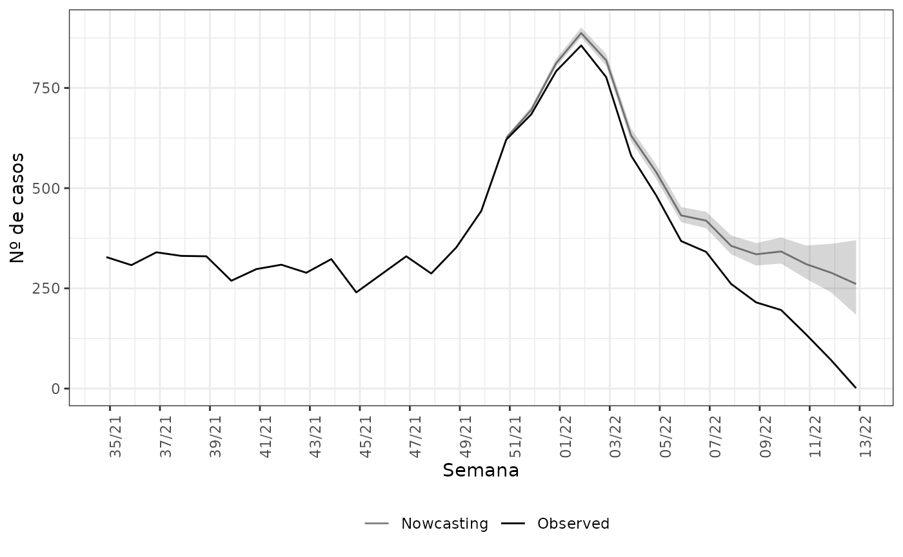
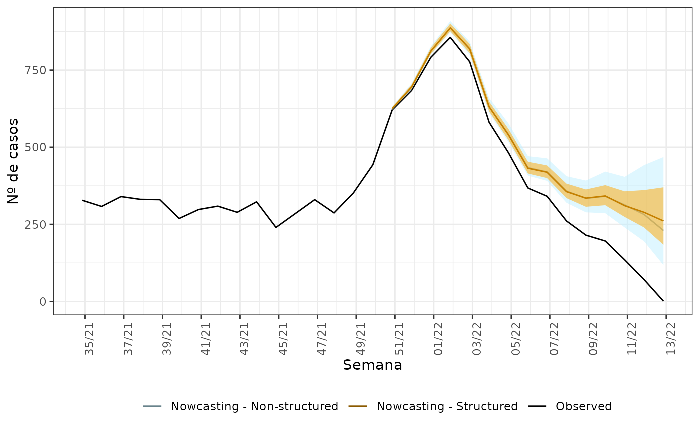

Resumo
Este é um artigo mais longo que explica o funcionamento e as escolhas por trás do modelo de nowcasting com INLA, suas vantagens e limitações.
Como antes…
Como em Primeiros passos, começamos carregando o pacote e seus dados:
Dados não estruturados
O exemplo de Primeiros passos usa dados não estruturados. Aqui descrevemos em mais detalhes esse tipo de dado e como ele pode mudar o nowcasting.
Ao chamar a função nowcasting_inla(), sua parametrização
padrão estima o modelo com os dados na forma não estruturada. A
estimativa ajusta uma distribuição binomial negativa, NegBinom(\lambda_{t,d}, \phi), à contagem de
casos no tempo t com atraso d, sendo \phi o parâmetro de dispersão. A taxa \lambda_{t,d} é então escrita de forma
log-linear como um termo constante somado a efeitos aleatórios
estruturados de atraso e de tempo. Esta é toda a premissa do nowcasting:
modelamos as contagens de casos no tempo t dada a contagem naquele tempo e os valores
passados, assim como a distribuição do atraso dessa contagem.
Assim, o modelo é dado por:
Y_{t,d} \sim NegBinom(\lambda_{t,d}, \phi), \\ \log(\lambda_{t,d}) = \alpha + \beta_t + \gamma_d, \\ \beta_t := u_t - u_{(t-1)} - u_{(t-2)} \sim N(0,\tau_{\beta}); \gamma_d := u_d - u_{(d-1)} \sim N(0, \tau_{\gamma})\\ t=1,2,\ldots,T, \\ d=1,2,\ldots,D,
Onde o intercepto \alpha segue uma
distribuição Gaussiana com variância muito grande, \beta_t segue um passeio aleatório de segunda
ordem com precisão \tau_\beta e \gamma_d um passeio aleatório de primeira
ordem com precisão \tau_\gamma. O
modelo é completado pelas distribuições a priori padrão do INLA para
\phi, \tau_\beta e \tau_\gamma. Veja as páginas de ajuda do INLA
para nbinomial,
rw1
e rw2.
A chamada da função é direta: ela precisa apenas de um conjunto de
dados como entrada, aqui o LazyData carregado no
namespace do pacote. A função tem 3 parâmetros obrigatórios:
dataset, o conjunto de dados a ser corrigido,
date_onset, o nome da coluna com a data de início dos
sintomas, e date_report, o nome da coluna com a data de
notificação dos casos. Aqui essas colunas são “DT_SIN_PRI” e
“DT_DIGITA”, respectivamente. As duas datas são necessárias porque
modelamos o atraso como parte da estimativa do nowcasting; em geral,
modelos de nowcasting assumem uma distribuição de atraso e a aplicam aos
casos observados.
nowcasting_bh_no_age <- nowcasting_inla(dataset = sragBH,
date_onset = DT_SIN_PRI,
date_report = DT_DIGITA)
head(nowcasting_bh_no_age$total)#> # A tibble: 6 × 7
#> Time dt_event Median LI LS LIb LSb
#> <int> <date> <dbl> <dbl> <dbl> <dbl> <dbl>
#> 1 17 2021-12-19 625 621 632. 623 627
#> 2 18 2021-12-26 695 687 707 692 698
#> 3 19 2022-01-02 812 800. 829 807 817
#> 4 20 2022-01-09 886 872 908 880 893
#> 5 21 2022-01-16 818 800 846. 811 827
#> 6 22 2022-01-23 631 609 660 622 640A chamada acima retorna apenas a estimativa do nowcasting e seus
intervalos de credibilidade (IC) em dois níveis: LIb e
LSb são os limites inferior e superior do IC de 50%, e
LI e LS são os limites inferior e superior do
IC de 95%.
A nowcasting_inla pode também retornar a curva sobre a
qual a janela de ação do modelo foi definida: com o parâmetro
data.by.week = TRUE, o segundo elemento da lista de saída
traz os dados resumidos por semana.
nowcasting_bh_no_age <- nowcasting_inla(dataset = sragBH,
date_onset = DT_SIN_PRI,
date_report = DT_DIGITA,
data.by.week = T)
head(nowcasting_bh_no_age$data)#> # A tibble: 6 × 4
#> dt_event delay Y Time
#> <date> <dbl> <dbl> <int>
#> 1 2021-08-29 0 13 1
#> 2 2021-08-29 1 51 1
#> 3 2021-08-29 2 127 1
#> 4 2021-08-29 3 55 1
#> 5 2021-08-29 4 26 1
#> 6 2021-08-29 5 15 1Este elemento traz as contagens de casos por atraso. É o chamado triângulo de atraso: tabulando o atraso contra a data de início dos primeiros sintomas, vemos o padrão de atraso dos casos.
library(dplyr)
data_triangle <- nowcasting_bh_no_age$data |>
filter(delay < 30) |>
arrange(delay) |>
select(-Time)
data_triangle |>
filter(dt_event >= (max(dt_event) - 84),
delay <= 10) |>
tidyr::spread(key = delay, value = Y)#> # A tibble: 13 × 12
#> dt_event `0` `1` `2` `3` `4` `5` `6` `7` `8` `9` `10`
#> <date> <dbl> <dbl> <dbl> <dbl> <dbl> <dbl> <dbl> <dbl> <dbl> <dbl> <dbl>
#> 1 2022-01-02 20 106 114 109 98 113 72 69 27 19 18
#> 2 2022-01-09 7 105 152 104 135 109 83 66 27 30 18
#> 3 2022-01-16 10 139 101 135 103 90 70 51 17 28 33
#> 4 2022-01-23 15 98 121 77 69 79 29 37 28 28 NA
#> 5 2022-01-30 11 87 99 73 76 38 36 40 22 NA NA
#> 6 2022-02-06 16 76 77 62 37 30 35 35 NA NA NA
#> 7 2022-02-13 7 85 59 45 69 47 29 NA NA NA NA
#> 8 2022-02-20 20 52 72 44 27 46 NA NA NA NA NA
#> 9 2022-02-27 12 63 48 40 52 NA NA NA NA NA NA
#> 10 2022-03-06 12 56 72 56 NA NA NA NA NA NA NA
#> 11 2022-03-13 15 56 64 NA NA NA NA NA NA NA NA
#> 12 2022-03-20 11 60 NA NA NA NA NA NA NA NA NA
#> 13 2022-03-27 1 NA NA NA NA NA NA NA NA NA NAOlhamos apenas os casos com 10 semanas de atraso ou menos e os 84
dias anteriores à data mais recente. Por padrão, o atraso máximo
considerado no nowcasting é de 15 semanas (parâmetro
Dmax).
Agrupado e somado pela data de início dos sintomas, aqui
DT_SIN_PRI, este elemento é a curva epidemiológica
observada. Para ilustrar, plotamos a estimativa e a curva epidemiológica
juntas.
library(ggplot2)
data_by_week <- nowcasting_bh_no_age$data |>
dplyr::group_by(dt_event) |>
dplyr::reframe(
observed = sum(Y, na.rm = T)
) |>
dplyr::filter(dt_event >= max(dt_event)-270)
nowcasting_bh_no_age$total |>
filter(dt_event >= (max(dt_event)-270)) |>
ggplot(aes(x = dt_event, y = Median, col = 'Nowcasting')) +
geom_line(data = data_by_week,
aes(x = dt_event, y = observed, col = 'Observed'))+
geom_ribbon(aes(ymin = LI, ymax = LS, col = NA), alpha = 0.2, show.legend = F)+
geom_line()+
theme_bw()+
theme(legend.position = "bottom", axis.text.x = element_text(angle = 90)) +
scale_color_manual(values = c('grey50', 'black'), name = '')+
scale_x_date(date_breaks = '2 weeks', date_labels = '%V/%y', name = 'Semana')+
labs(x = '', y = 'Nº de casos')
Dados estruturados por idade
A primeira melhoria que fizemos sobre o modelo básico de nowcasting com dados não estruturados foi ajustar o mesmo modelo para classes categóricas das contagens de casos: pelo curso epidemiológico do SARS-CoV-2, esperamos que diferentes idades tenham distribuições de atraso diferentes. Chamamos essa forma de olhar os dados de dados estruturados, pois agora eles têm identificadores de tempo, de atraso e de classe etária dos casos. Aos dados estruturados ajustamos novamente uma distribuição binomial negativa à contagem de casos no tempo t com atraso d. Diferentemente do caso não estruturado, o modelo agora tem efeitos aleatórios de atraso e de tempo para cada uma das classes etárias escolhidas pelo usuário. O modelo tem agora a forma:
Y_{t,d,a} \sim NegBinom(\lambda_{t,d,a}, \phi), \\ \log(\lambda_{t,d,a}) = \alpha_a + \beta_{t,a} + \gamma_{d,a}, \\ \beta_{t,a} := u_t - u_{(t-1)} - u_{(t-2)} \sim N(0,\tau_{a, \beta}); \gamma_{d,a} := u_d - u_{(d-1)} \sim N(0, \tau_{a, \gamma}) \\ t=1,2,\ldots,T, \\ d=1,2,\ldots,D, \\ a=1,2,\ldots,A
onde cada classe etária, a, tem um
intercepto \alpha_a com distribuição
Gaussiana de variância muito grande; os efeitos aleatórios tempo-idade,
\beta_{t,a}, seguem uma distribuição
Gaussiana multivariada conjunta com componentes de variância separáveis:
um termo Gaussiano independente para as classes etárias com precisão
\tau_{a,\beta} e um passeio aleatório
de segunda ordem no tempo com precisão \tau_{\beta}. Analogamente, os efeitos
aleatórios atraso-idade, \gamma_{d,a},
seguem uma distribuição Gaussiana multivariada conjunta com componentes
de variância separáveis: um termo Gaussiano independente para as classes
etárias com precisão \tau_{a,\gamma} e
um passeio aleatório de primeira ordem com precisão \tau_{\gamma}. O modelo é completado pelas
distribuições a priori padrão do INLA para \phi, \tau_{a,\beta}, \tau_{a,\gamma}, \tau_{\beta} e \tau_\gamma. Veja as páginas de ajuda do INLA
para nbinomial,
rw1
e rw2.
Este novo modelo corrige o atraso levando em conta os efeitos das
classes etárias e as interações de cada classe etária com o tempo e com
o atraso. O modelo precisa agora saber qual coluna do conjunto de dados
será usada para dividir os dados em classes etárias e como essas classes
serão definidas. Isso é feito com os parâmetros age_col e
bins_age. Também passamos data.by.week = TRUE
para retornar o triângulo de atraso. Quando age_col é
informado, o resultado vem de duas formas: a estimativa total agregada
(total) e a estimativa estratificada por idade
(age). A chamada da função tem a forma:
nowcasting_bh_age <- nowcasting_inla(dataset = sragBH,
bins_age = "10 years",
data.by.week = T,
date_onset = DT_SIN_PRI,
date_report = DT_DIGITA,
age_col = Idade)Cada uma das estimativas retornadas pela nowcasting_inla
tem a mesma forma do caso não estruturado: um data.frame
com a mediana a posteriori e os intervalos de credibilidade de 50% (LIb
e LSb) e 95% (LI e LS).
library(ggplot2)
dados_by_week <- nowcasting_bh_age$data |>
dplyr::group_by(dt_event) |>
dplyr::reframe(
observed = sum(Y, na.rm = T)
) |>
dplyr::filter(dt_event >= max(dt_event)-270)
nowcasting_bh_age$total |>
ggplot()+
geom_line(aes(x = dt_event, y = Median,
col = 'Nowcasting'))+
geom_line(data = dados_by_week,
aes(x = dt_event, y = observed,
col = "Observed"))+
geom_ribbon(aes(x = dt_event, y = Median,
ymin = LI, ymax = LS),
alpha = 0.2, show.legend = F)+
theme_bw()+
theme(legend.position = "bottom", axis.text.x = element_text(angle = 90))+
scale_color_manual(values = c('grey50', 'black'), name = '')+
scale_x_date(date_breaks = '2 weeks', date_labels = '%V/%y', name = 'Semana')+
labs(x = '', y = 'Nº de casos')
Para completar, plotamos as duas estimativas juntas para ver o quanto diferem.
ggplot()+
geom_line(data = dados_by_week,
aes(x = dt_event, y = observed,
color = "Observed"))+
geom_line(data = nowcasting_bh_no_age$total |>
filter(dt_event >= (max(dt_event)-270)),
aes(x = dt_event, y = Median,
color = 'Nowcasting - Non-structured'))+
geom_ribbon(data = nowcasting_bh_no_age$total |>
filter(dt_event >= (max(dt_event)-270)),
aes(x = dt_event, y = Median,
ymin = LI, ymax = LS,
fill = "Nowcasting - Non-structured"),
alpha = 0.5, show.legend = F)+
geom_line(data = nowcasting_bh_age$total |>
filter(dt_event >= (max(dt_event)-270)),
aes(x = dt_event, y = Median,
color = 'Nowcasting - Structured'))+
geom_ribbon(data = nowcasting_bh_age$total |>
filter(dt_event >= (max(dt_event)-270)),
aes(x = dt_event, y = Median,
ymin = LI, ymax = LS,
fill = "Nowcasting - Structured"),
alpha = 0.5, show.legend = F)+
theme_bw()+
theme(legend.position = "bottom",
axis.text.x = element_text(angle = 90))+
scale_color_manual(values = c("lightblue4",
"orange4",
"black"),
name = "")+
scale_fill_manual(values = c("lightblue1",
"orange1",
"black"),
name = "")+
scale_x_date(date_breaks = '2 weeks',
date_labels = '%V/%y',
name = 'Semana')+
labs(x = '',
y = 'Nº de casos')
O nowcasting que usa a informação de idade é mais estreito e mostra uma tendência de queda menor no final da série. Isso acontece porque, com um modelo de nowcasting atuando em cada classe etária, é possível capturar efeitos que ficam mascarados quando os dados não são divididos por idade.
Conclusão
Neste artigo aprendemos a usar a nowcasting_inla() e
vimos como o nowcaster pode empregar dois modelos
diferentes: um que não considera diferenças de atraso entre classes
etárias e outro que considera. Por fim, comparamos as duas estimativas e
mostramos que o modelo que usa a informação de classe etária produz
estimativas mais estreitas.